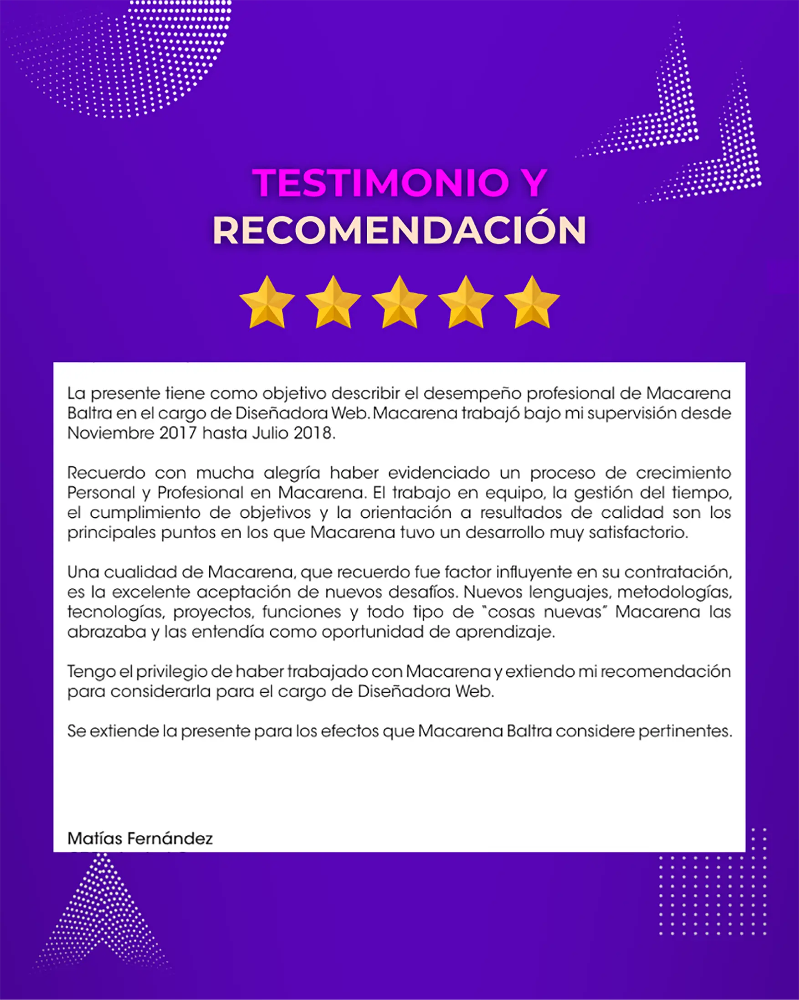

Detalles del proyecto
Herramientas utilizadas
Colaboradores/Stakeholders
Contexto
FOL necesitaba unificar su identidad visual en sitio web, presentaciones y plataformas colaborativas de diversos convenios. Sin un manual claro, cada área aplicaba colores y tipografías de forma distinta, diluyendo el impacto de la marca.
Desafío
Liderar la creación de un Brand System robusto y un UI Kit en Illustrator, creando como producto final un PDF explicativo y detallado, que facilitara a equipos internos y externos producir gráficos y prototipos sin perder la coherencia de marca.
Empresa/Cliente: FOL Agencia de Valores SpA
Proceso & Aprendizajes
Buyer Personas & User Journeys: Identifiqué usuarios internos (TI, Marketing, Ventas, Información) y externos (diseñadores colaboradores, clientes con convenio) para mapear sus interacciones con nuestra marca.
Shadowing & Task Flows: Acompañé a cada equipo en sus tareas diarias, documentando sus interacciones con la marca y detectando oportunidades de simplificación.
Validación y ajuste: Realicé sesiones de feedback periódicas con las partes interesadas en las que expuse prototipos y documentación, adaptando el discurso para evitar tecnicismos y asegurar la comprensión de todos los perfiles. A partir de sus comentarios, iteré rápidamente el UI Kit: incorporé nuevos componentes, ajusté detalles de interacción y amplié la guía con la paleta de colores (HEX/RGB), familias tipográficas y sistema de íconos. También añadí documentación de clases CSS y fragmentos de Bootstrap para una implementación ágil, junto con un tutorial paso a paso que facilita la configuración e integración de los elementos esenciales sin requerir conocimientos técnicos previos (manual de marca).
Resultados
Coherencia visual total: Todas las piezas (web, PPT, redes) comparten identidad.
Agilidad en prcoesos de diseño: Se constató una reducción de hasta 50 % en el tiempo de creación de nuevos assets y garantizó una identidad coherente en todos los canales.
Adopción inmediata: TI y Marketing lo usarón como referencia única desde el día uno.
Escalabilidad: Cada nuevo personal aprendió la marca en minutos, evitando confusiones.
Enfoque UX Architect & Graphic Design
En mi rol de Graphic Designer, elaboré el manual de marca en PDF que mi jefe pudo compartir fácilmente por correo y al que todos los equipos accedieron sin complicaciones. Incluí ejemplos de aplicación en web, presentaciones y material impreso, así como fragmentos de CSS y Bootstrap listos para integrar en la plataforma. Además, facilité workshops ágiles con TI y Marketing para iterar rápidamente los diseños, ajustar botones, tarjetas y banners, y organicé sesiones prácticas con usuarios de Información y TI para resolver dudas de configuración e instalación. Este enfoque colaborativo aceleró la integración de la nueva identidad visual y fortaleció la comunicación entre soporte y desarrollo, logrando un cierre de proyecto exitoso.
Como UX Architect, estructuré un Design System y UI Kit unificado con tokens de estilo (valores de diseño como colores, tipografías e iconografía) y reglas de composición claras. Diseñé la arquitectura de componentes en Illustrator y documenté cada uso en un manual PDF, asegurando coherencia, escalabilidad y facilidad de implementación en futuras iteraciones.
Testimonios & Referencias
-

Nov 2017 – Mar 2019 |Dependiente
Carta de Recomendación“El trabajo en equipo, la gestión del tiempo, el cumplimiento de objetivos y la orientación a resultados de calidad… Macarena abrazaba todo tipo de ‘cosas nuevas’ como oportunidades de aprendizaje.”
Matías Fernández
Gerente de TI en FOL Agencia de Valores SpA